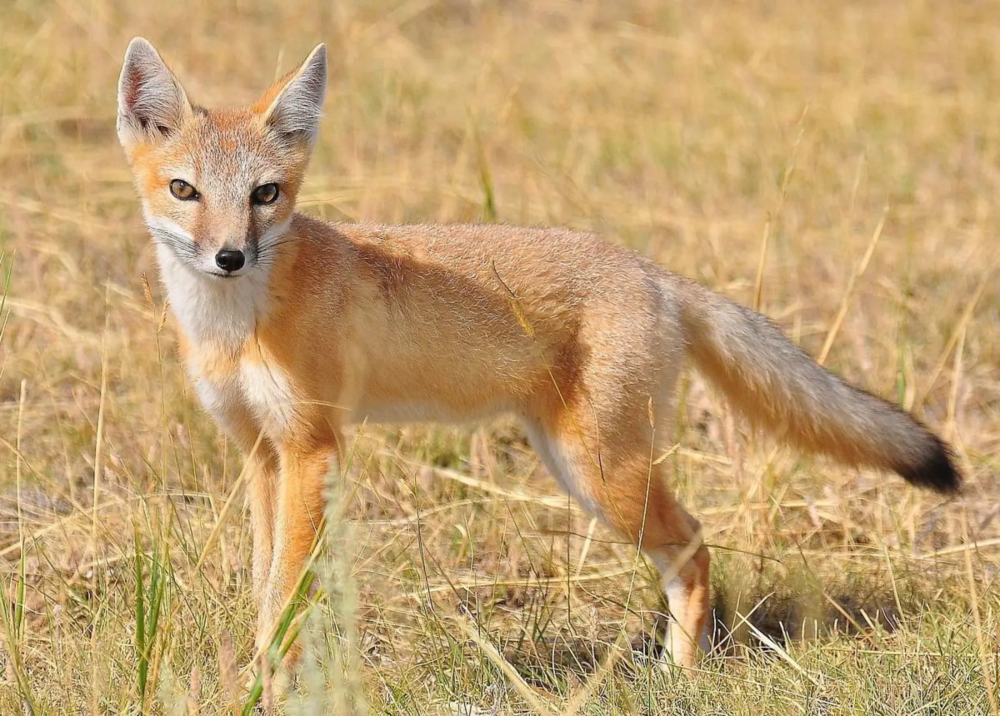
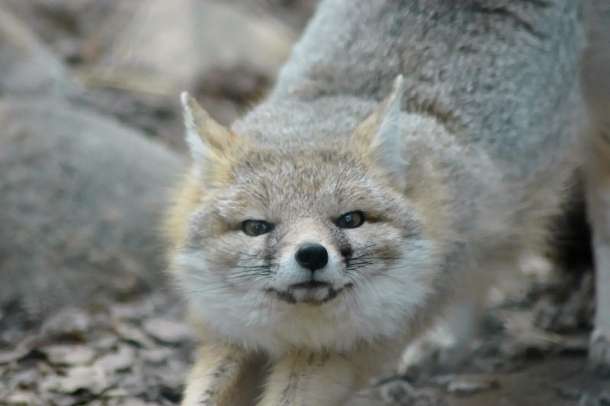

The swift fix lives in the North American Great Plains, from central Alberta, to Colorado, and Texas.
They eat rodents and rabbits, grasshoppers, beetles, birds, lizards, grasses, and fruits. They occasionaly eat roadkill because they live in pretty urban areas.
They often get into conflicts with coyotes. It is called the swift fox because they can reach speeds of 25 miles an hour (40 kilometres an hour).


Photo by unknown from unknown
Photo by unknown from unknown